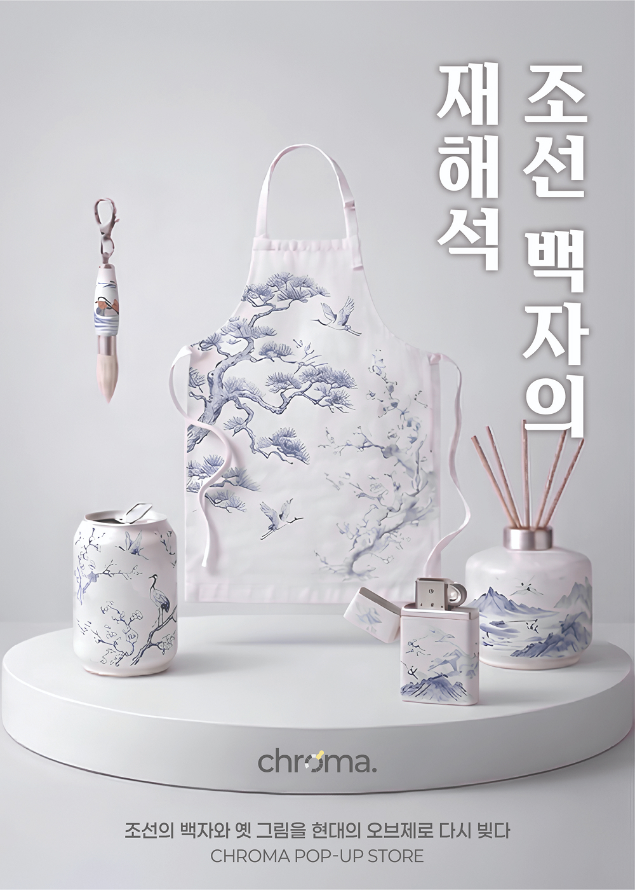
조선 백자의 재해석
09.08. ~ 09.22.
- | 장소 | chroma 3F POP-UP ZONE
- | 문의 | 051-789-0123
- | 관람시간 | 11:00 ~ 20:00(입장마감 19:30)
조선 백자의 형태와 문양을 기반으로 한 오브제 및 제품을 선보이는 팝업입니다.
전통적 요소를 현대적 사용 방식에 맞게 재구성한 컬렉션으로 구성됩니다.
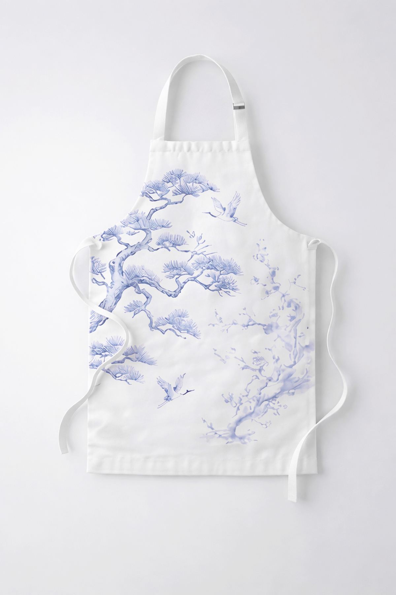
일상의 문양
백자의 전통 문양을 섬유 위에 구현한 앞치마로,
가정 및 작업 환경에서 활용할 수 있도록 설계된 제품이다.
기록의 단편
전통 회화 도구인 붓의 형태를 재해석한 키링으로,
일상에서 사용할 수 있도록 소형 오브제로 제작되었다.
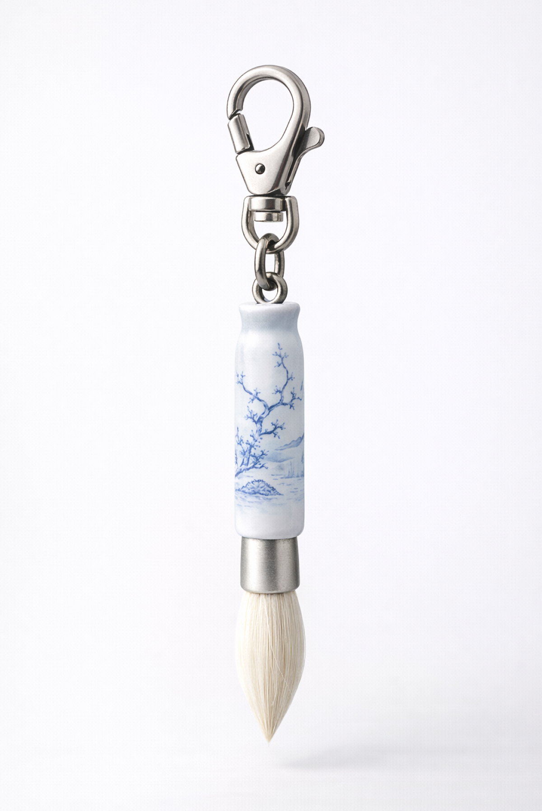
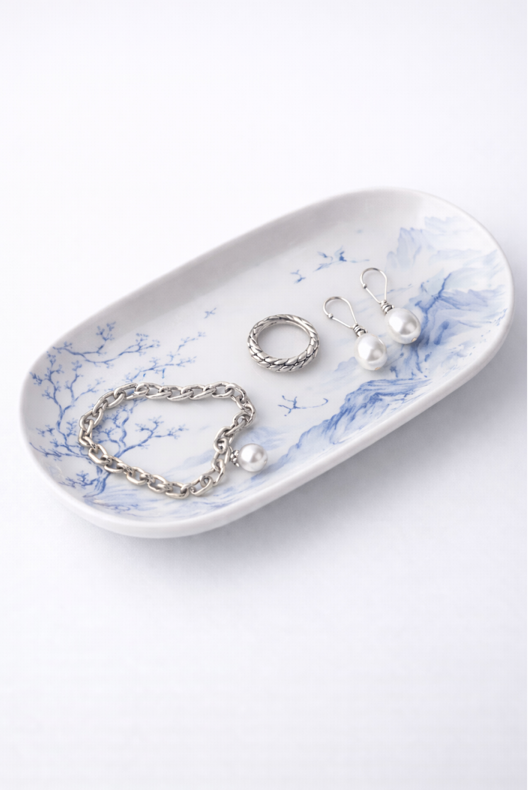
담기는 공간
백자의 곡선과 표면을 기반으로 재해석한 트레이로,
작은 사물을 담아 정리할 수 있도록 설계된 오브제이다.
공간 안내
chroma에서 열리는 팝업 공간을
자유롭게 경험해보세요.
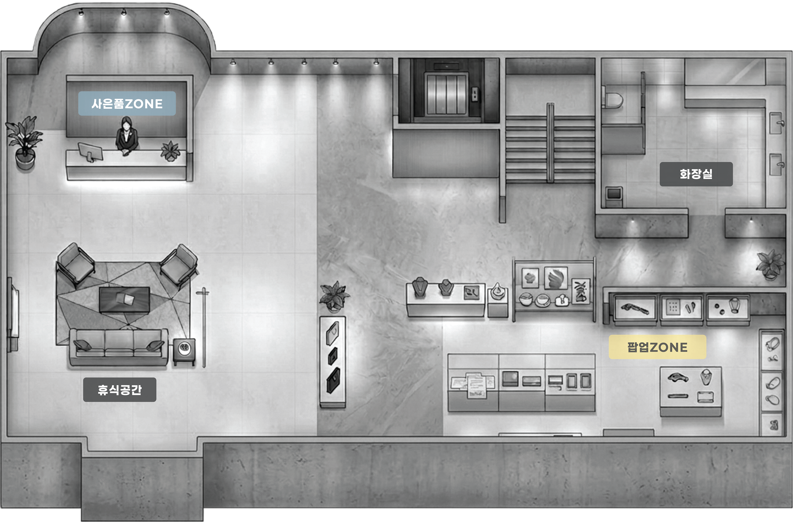
팝업 후기
관람객의 시선으로 기록된 팝업 경험을 확인해보세요!
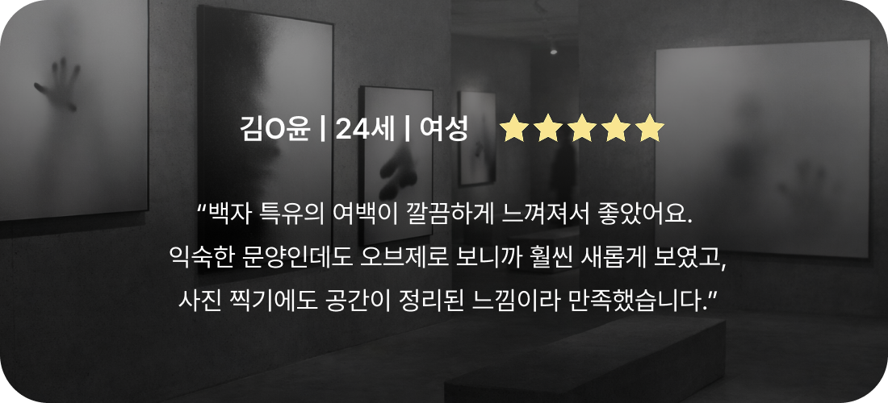
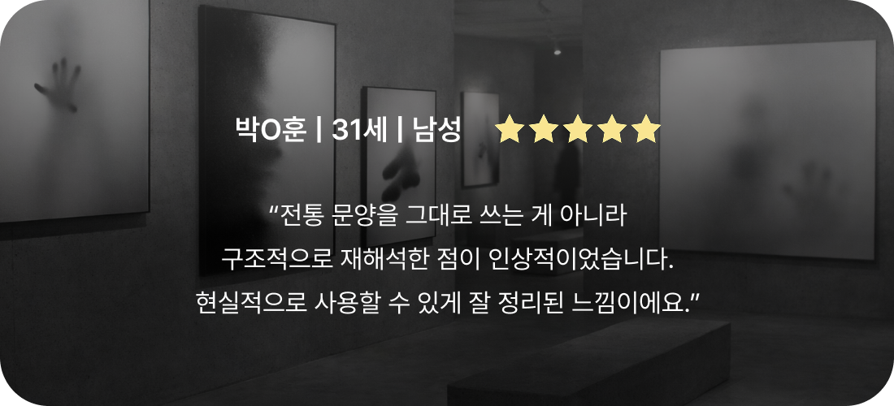
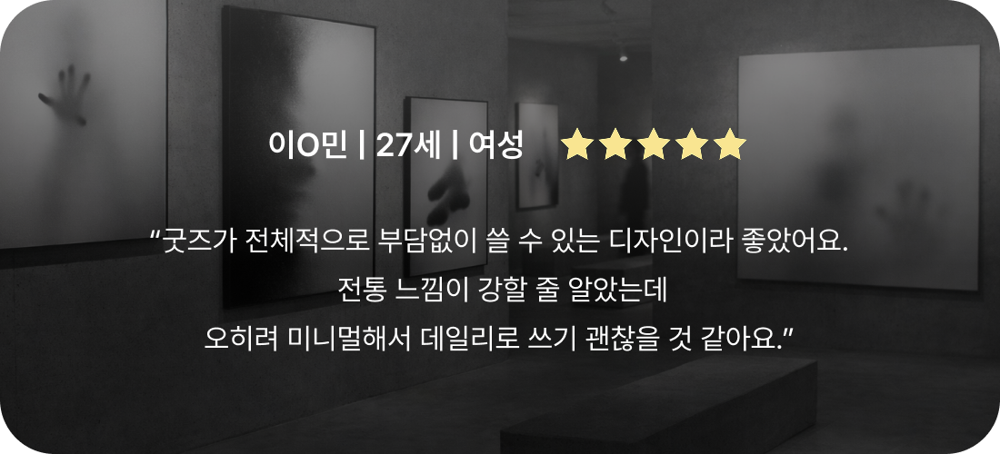
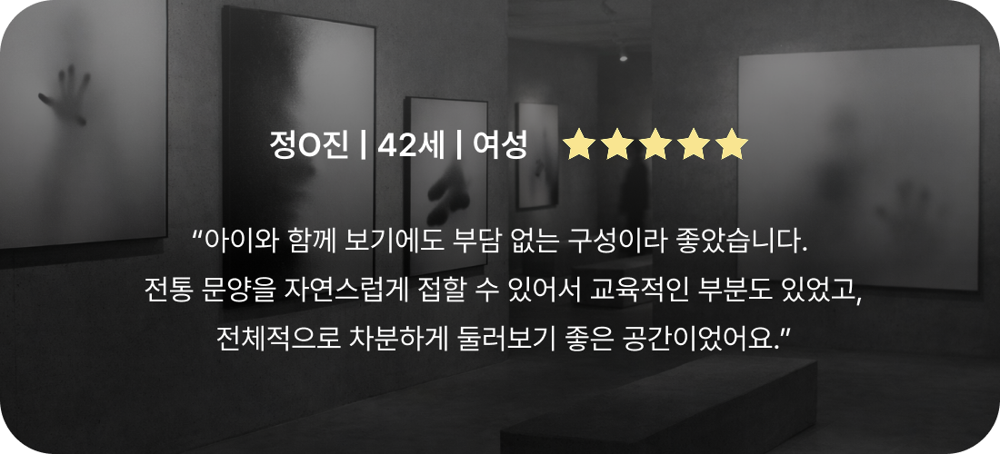
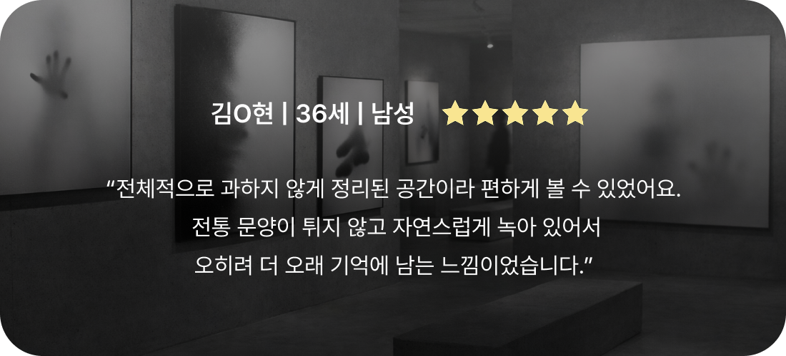
예정 팝업
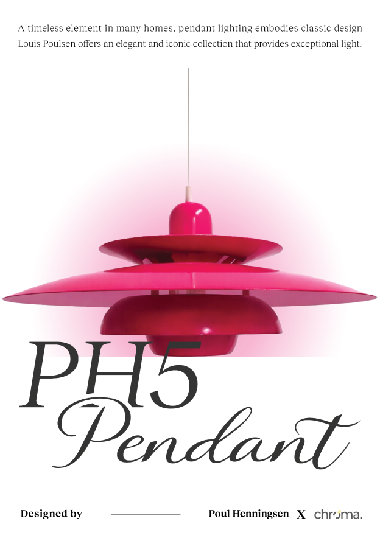
PH5 Pendant
09.17. ~ 10.15.
전구의 형태와 크기의 변화에 대응하도록 설계된
PH5 펜던트 조명을 중심으로, 다양한 색상과 구조를 통해
공간의 분위기를 새롭게 정의하는 팝업입니다.
지난 팝업
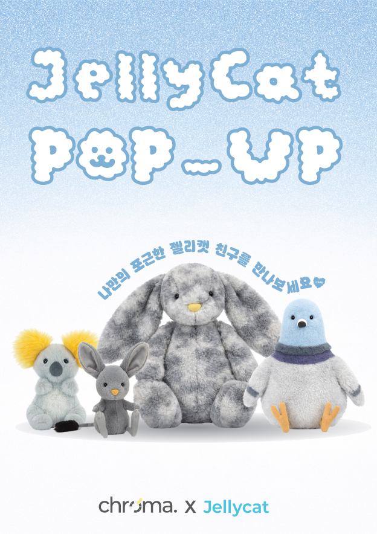
JELLYCAT
08.14. ~ 09.04.
젤리캣 인형을 중심으로 구성된 팝업으로,
부드러운 촉감과 친근한 형태의 오브제를 선보입니다.
Copyright ⓒ CHROMA of Art Space.